ХРОНИКА ПОСЛЕДНИХ ДНЕЙ ЕВРОПЫ // 1962 // ТЕРМИНАЛЬНАЯ ВЕРСИЯ
Глобальная стратегия в эстетике военных терминалов 80-х по мотивам мода для Hearts of Iron IV «The New Order: Last Days of Europe».
Рейх выиграл войну, но гниёт изнутри. Фюрер при смерти. На западе ждёт своего часа орден СС, на востоке из руин поднимается Чёрная Лига. Вы ведёте одну из сторон к последней войне за Европу.
Чёрный экран, зелёный моноширинный текст, рамки из псевдографики, корпус кинескопа со скруглёнными углами, свечение люминофора и бегущая полоса развёртки. Под этой оболочкой — полноценная стратегия в реальном времени с паузой: вы управляете страной день за днём с 1 января 1962 года.
Что вас ждёт
Две стороны с разными ветками: Орденштат Бургундия поглощает распавшийся Рейх, Чёрная Лига собирает Россию по кускам.
Подробная карта Европы с областями и границами 1962 года: захваченные земли переходят к вам область за областью.
Сотни ивентов и суперивенты с ASCII-анимациями и синтезированным звуком: сирены, марши, телетайп, ядерный гриб.
Армия и дипломатия: призыв, учения, заводы, доктрины, переговоры, шпионаж, подкуп, марионетки.
И главное
Ядерная программа: уран, объекты, утечки и аварии, испытание, боеголовки, бомбардировщики и ракеты.
Эскалация: манёвры, перестрелки на границе, ложные тревоги, casus belli. Война идёт по линии фронта и чаще всего кончается ядерным обменом.
Шесть концовок и эпилог, который пересказывает ваши решения.
[F2] СЮЖЕТ
Германия и Япония победили во Второй мировой. Двадцать лет Рейх правит от Атлантики до Урала, но держится только на имени одного человека. Когда его не станет, Европа сорвётся в пропасть, и кто-то должен оказаться на краю первым.
Рейх выглядит несокрушимым, но экономика трещит, а вокруг стареющего фюрера грызутся наследники: Борман и партийная канцелярия, реформатор Шпеер с промышленниками, рейхсмаршал Геринг с армией и Люфтваффе, Гейдрих и СС.
В 3:40 ночи сердце Адольфа Гитлера останавливается. Берлин горит, Рейх распадается на осколки, рейхскомиссариаты остаются без хозяина. Начинается смута.
В Брюсселе рейхсфюрер Генрих Гиммлер ждал этого дня. Его Орденштат Бургундия — государство-орден СС и один огромный концлагерь — двигает дивизии на Германию, а обычная армия идёт во Францию.
В Вологде среди руин Западной России окопалась Чёрная Лига — офицерская клика генерала Карбышева, которой правит главковерх Язов. Атаманства, советы, монархии и анклавы она соберёт словом или огнём.
Обе стороны тайно строят бомбу. Напряжённость на новой границе растёт: манёвры, перестрелки, ложные тревоги. Ни Бургундия, ни Лига не принимают ультиматумов.
Лига верит, что Россия должна прийти к последней войне с немцами единой, неделимой и непобедимой. Кто начнёт её первым и что останется от Европы после — решаете вы.
[F3] ВЫБОР СТОРОНЫ

[1] ОРДЕНШТАТ БУРГУНДИЯ
СТОЛИЦА: БРЮССЕЛЬ
Орденское государство СС рейхсфюрера Генриха Гиммлера: Бельгия и северо-восток Франции.
Вся страна — один огромный концлагерь: заводы и шахты работают на труде заключённых, за каждым следит доносчик, правят рыцари Ордена СС. Когда фюрер умрёт, Гейдрих и СС в Германии будут ждать приказов из Брюсселя.
СТИЛЬ ИГРЫ: сильная промышленность, мало людей. «Поглощение Германии» и «Захват Франции» открываются с гражданской войной в Рейхе. Финал ветки — «Падение Берлина».

[2] ЧЁРНАЯ ЛИГА
СТОЛИЦА: ВОЛОГДА
Офицерская клика, основанная генералом Карбышевым и укрепившаяся в Вологде среди руин Западной России. Фактически ею правит главковерх Дмитрий Язов.
Страна распалась на атаманства, советы и анклавы. Лига соберёт их словом или огнём, а потом поведёт на Запад. Соперники — Горьковская директория, Рокоссовский на Урале и Тюменский совет Кирова.
СТИЛЬ ИГРЫ: огромные резервы, слабая промышленность. «Объединение России» доступно почти сразу. Финал ветки — «Знамя над Кремлём».
Windows может предупредить: «Система Windows защитила ваш компьютер». У exe нет платной цифровой подписи. Нажмите «Подробнее», затем «Выполнить в любом случае».
Из исходников: pip install -r requirements.txt, затем python main.py. На Windows хватит двойного клика по «Великий суд.pyw».
Управление
ПРОБЕЛ
пауза / ход времени
1–5, + / −
скорость: от дня в секунду до 25 дней в секунду
F1…F8, TAB
вкладки боковой панели
↑ ↓ ← →
выбор строки и действия
ENTER
выполнить действие, выбрать вариант
C
цвет экрана: зелёный, фиолетовый, красный, голубой
F11
во весь экран
Совет: финальные штурмы Берлина и Кремля требуют сильной армии. Операции съедают людей и технику, пополняйте армию между захватами.